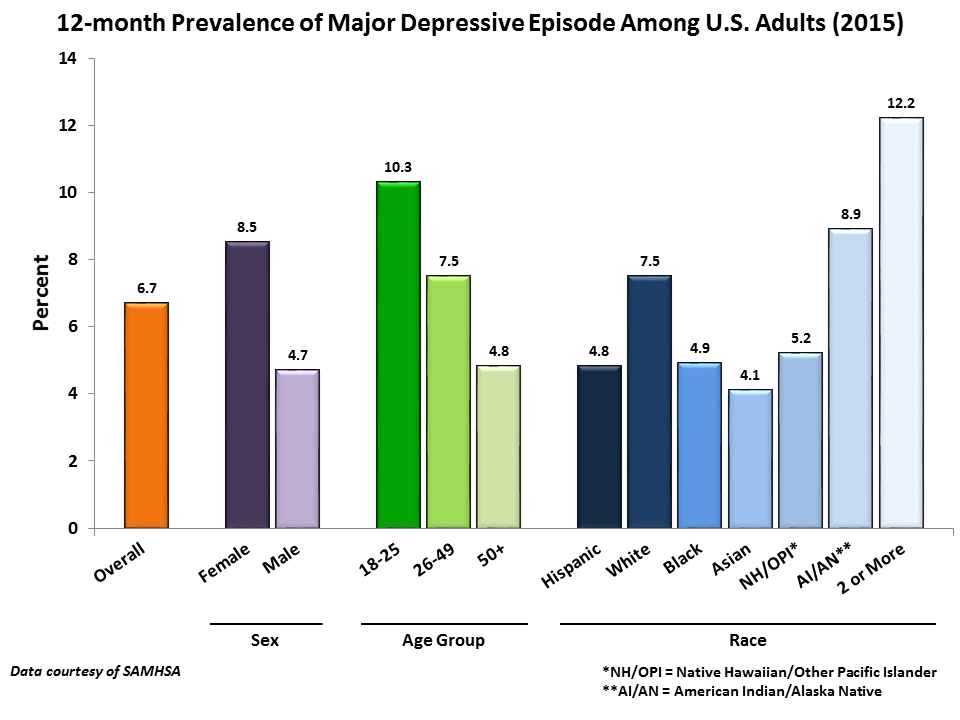
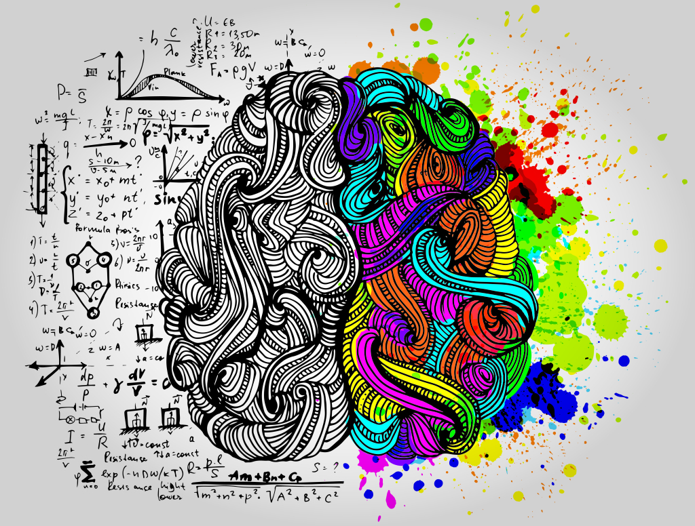

- Psychology is the study of the mind and behavior. Research in psychology seeks to understand and
explain how people think, act, and feel. Psychologists strive to learn more about the many factors
hat can impact thought and behavior, ranging from biological influences to social pressures.
Interesting Psychological Facts That Explain Why We Are The Way We Are...
♦ If you announce your goals to other you are less likely to succeed.studies confirm you lose motivation.
♦ The very last person on your mind before you fall asleep is either the reason for your happiness
or your pain.
♦ Your mind rewrites monotonous speeches of boring people to make it sound interesting
♦ The type of music your listen to affexts the way you perceive the world.
♦ Convincing yourself you slept well tricks your brain into thinking it did.
♦ It is possible to die from a broken heart.it's called Stress Cardiomyopathy.
♦ 90% of people text things they can't say in person.
♦ Your decisions are more rational when thought in another language.
♦ People between the ages of 18 and 33 are the most stressed in the world.after the age of 33,stress leves tend to reduce.
♦ When you try to remember a past event,you're actually remembering the last time you remembered it rather than the event itself.
♦ Comedians and funny people are actually more depressed than others.
♦ There is a gene that can cause you to be negative most of the time.
♦ Good liars are better at detecting lies of others.
We'll match you to a counselor that can help with..
Depression
Anxiety
Stress
Addiction
Relationship
Grief
John R. Anderson. Cognitive Psychology.
Anderson was born in Vancouver, British Columbia, Canada, in 1947. He received his bachelor’s degree from the University
of British Columbia in 1968, and his PhD in psychology from Stanford University in 1972. Today, he is Professor of Psychology
(with a joint appointment in Computer Science) at Carnegie Mellon University.
Lisa Feldman Barrett .Biological Psychology.
Barrett (née Feldman) was born in Toronto, Ontario, Canada, in 1963. She received her bachelor’s
degree in psychology from the University of Toronto, and her PhD in clinical psychology at the
University of Waterloo, in Waterloo, Ontario. She is currently University Distinguished Professor
of Psychology at Northeastern University, where she heads up the Interdisciplinary Affective Science Laboratory (IASL).
Edward F. Diener .Personality Psychology.
Diener was born in Glendale, California, in .He received his bachelor’s degree in psychology
in 1968 from California State University at Fresno, and his PhD in 1974 from the University of Washington.
He is currently Professor Psychology at the University of Virginia and at the University of Utah,
as well as the Joseph R. Smiley Distinguished Professor Emeritus at the University
of Illinois-Champaign/Urbana and a Senior Scientist with the Gallup Organization..
What Is Depression?
Being depressed often feels like carrying a very heavy burden, but you are not alone in this struggle.
Millions of Americans suffer from some form of depression every year, making it one of the most common mental disorders in the country.
Gaining a deeper understanding of depression can help begin the journey to recovery.
Taking some time to learn more about the causes and symptoms of depression will assist you greatly
when it comes time to consider methods of treatment.
Which is the average age of people when symptoms of depression appear?
Click to see the Prevalence of major depressive episode among USA (2015)

What Is Anxiety?
Anxiety is your body’s natural response to stress. It’s a feeling of fear or apprehension about what’s to come.
The first day of school, going to a job interview,
or giving a speech may cause most people to feel fearful and nervous.
But if your feelings of anxiety are extreme, last for longer than six months,
and are interfering with your life, you may have an anxiety disorder.
- Feeling nervous, restless or tense.
- Having a sense of impending danger, panic or doom.
- Breathing rapidly (hyperventilation)
- Feeling weak or tired.
- Trouble concentrating or thinking about anything other than the present worry.
If you need to relax listen to the music below...
What Is Stress?
Stress is your body’s way of responding to any kind of demand or threat.
When you sense danger—whether it’s real or imagined—the body's defenses kick into high gear in a rapid,
automatic process known as the “fight-or-flight” reaction or the "stress response.
Table1.Signs and symptoms of stress overload
Cognitive symptoms
Emotional symptoms
Physical symptoms
Memory problems
Depression or general unhappiness
Aches and pains
Inability to concentrate
Anxiety and agitation
Diarrhea or constipation
Poor judgment
Moodiness, irritability, or anger
Nausea, dizzinesstd
Seeing only the negative
Loneliness and isolation
Chest pain, rapid heart rate
Video1:How To Calm Down During A Panic Attack
What Is Addiction?
Addiction is a complex disease, often chronic in nature, which affects the functioning of the brain and body.
It also causes serious damage to families, relationships, schools, workplaces and neighborhoods.
The most common symptoms of addiction are severe loss of control, continued use despite serious consequences,
preoccupation with using, failed attempts to quit, tolerance and withdrawal. Addiction can be effectively prevented,
treated and managed by healthcare professionals in combination with family or peer support.
40 million Americans ages 12 and older—or more than 1 in 7 people—abuse
or are addicted to nicotine, alcohol or other drugs. This is more than the number
of Americans with heart conditions (27 million), diabetes (26 million) or cancer (19 million)
WHAT IS THE DIFFERENCE BETWEEN DRUG OR ALCOHOL ABUSE AND ADDICTION?
There is a range in the severity of substance problems: from mild to moderate to severe.
Drug or alcohol abuse is a mild substance problem, defined by having two or three symptoms of addiction.
People who abuse drugs or alcohol can experience serious consequences such as accidents, overdoses, crime,
school problems, violence and suicide. Many people experience alcohol or drug abuse problems, but are able to
stop using or change their pattern of use without progressing to addiction.

The Anxiety and Depression Association of America
The Anxiety and Depression Association of America (ADAA) is an international
nonprofit membership organization (with more than 1,800 professional mental health members)
and a leader in education, training, and research for anxiety, depression and related disorders.
National Institute of Mental Health
The National Institute of Mental Health (NIMH) is one of 27 institutes and centers
that make up the National Institutes of Health (NIH). The NIH, in turn, is an agency of the
United States Department of Health and Human Services and is the primary agency of the United States
government responsible for biomedical and health-related research.
BeyondBlue
Beyondblue is an Australian independent non-profit organisation working to address issues associated with depression,
suicide, anxiety disorders and other related mental disorders.beyondblue works in partnership with health services,
schools, workplaces, universities, media and community organisations, as well as people living with anxiety and depression,
their friends and family, to raise community awareness of anxiety and depression and reduce associated stigma.